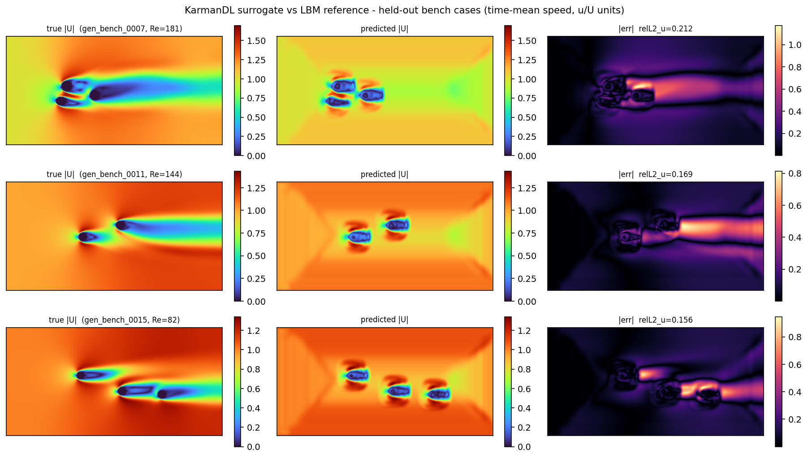
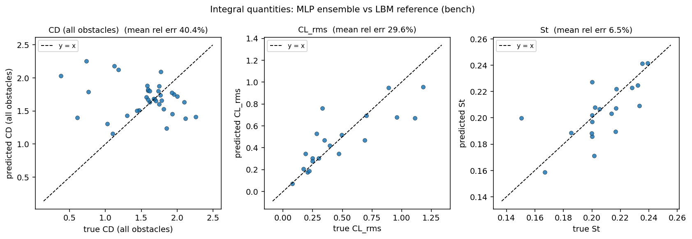

LBM 卡门涡街深度学习代理模型 桌面本地版
1~3 个圆柱 / 椭圆障碍尾流的实时代理软件 —— 拖动几何、毫秒出时均流场与受力、涡脱频率一步到位。
本软件以自研 D2Q9 格子 Boltzmann 求解器批量计算的 98 组卡门涡街算例 （Re = 80~200，1~3 个圆柱 / 椭圆障碍）为训练数据，构建了时均流速场 U-Net 与五模型受力集成网络。在画布上放置、拖动障碍物并调节雷诺数，即可毫秒级得到时均流速 / 涡量云图， 以及每个障碍物的阻力系数、升力均方根与斯特劳哈尔数（涡脱频率）预测。 求解器经单圆柱基准标定（Re = 20~200，斯特劳哈尔数与文献偏差 ≤6%）。 软件在本机以网页界面运行，数据不出本机。
先看物理：上方动画为本软件自研 D2Q9 格子 Boltzmann 求解器逐时间步计算的真实结果 ——单圆柱 Re = 150：上层为涡量场（红蓝交替的正负涡脱落形成卡门涡街）， 中层为流向速度 u/U，下层为升力系数 CL 时程与涡脱频谱（斯氏数与经典文献吻合）。 代理模型的训练数据正是在这一求解器上批量生成； 软件主界面即以这类时均流速 / 涡量场为核心显示对象。
主要功能
321×161 格子 · 98 组 LBM 训练数据（留出 20 组测试）：斯特劳哈尔数平均误差 6.5%，第一障碍物 阻力系数 11%，时均流速场 u 分量相对误差约 12% —— 横向 v 分量与第 2/3 障碍物 CD 受 78 组训练样本所限误差较大（详见下方评估图）。
模型评估（留出测试集）

留出测试集中误差最大的 3 个算例：真值时均流速云图（左）、代理模型预测（中）、绝对误差（右）。

积分量预测对照：各障碍物阻力系数（左）、升力均方根（中）、斯特劳哈尔数（右）。
获取与运行
- 软件部署在作者本机（桌面本地版，数据不出本机）；本页面为软件介绍。
- 本机首次配置（一次性）：双击 LBM_KarmanDL\注册软件协议.reg， 注册 karman:// 启动协议。
- 日常使用：直接点击下方按钮——本机启动器会自动启动服务并打开预测界面 （服务已在运行时直接打开界面）；也可双击 LBM_KarmanDL\启动软件.bat 手动启动 （依赖：Python 3.10+，numpy / torch / flask）。
方法与说明
训练数据由作者自研的 D2Q9 格子 Boltzmann 求解器生成（BGK 碰撞、半步反弹边界、 动量交换法计力），单圆柱基准的阻力系数与斯特劳哈尔数对照经典文献数据标定； 模型为 PyTorch U-Net（时均场）与五模型 MLP 集成（积分量），在 CPU 上即可毫秒级推理。